All new images are unapproved. The current game atlas remains unchanged. This page shows source direction and a quantized DIAGNOSTIC atlas. Strict packing exits1: superDash08, guard09 and existing charge13 fail. The diagnostic fixture bypasses write blocking only to inspect pixels; its labels are not approvals. No full anatomy pass. Review visual direction; hold in-game integration pending Claude calibration and anatomy checks.
Per-frame numeric audit and uncertainty · Numbers / hashes · Strict gate output · Diagnostic atlas metadata
Native baseline: approved idle08 H38±2 / torso38±2 / arm39±4 / leg61±6 / shoe25±2 px. A rotated or concealed chain gets no passing number. This round14calls: idleA3/B3, guard2, superDash2, stagger3, win1.
Final idle11 nativeheight 144/144/144/144/146/146/146/146px misses156–162target, H36–38±2/T38±2/A35±4/L56–58±6/S23±2. Full-figure calibration could oversize torso. Guard09 H34±2/T34±2/armsoccluded/L56±6/S23±2, nativeheight132, stricthead0.904FAIL. No full anatomy pass; idle/stagger generation budgets exhausted.
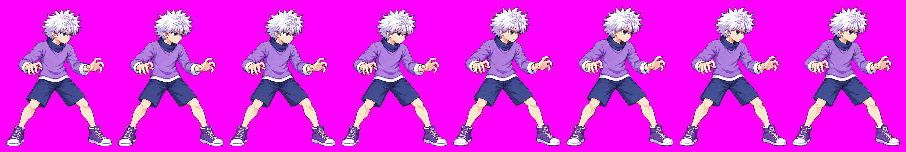
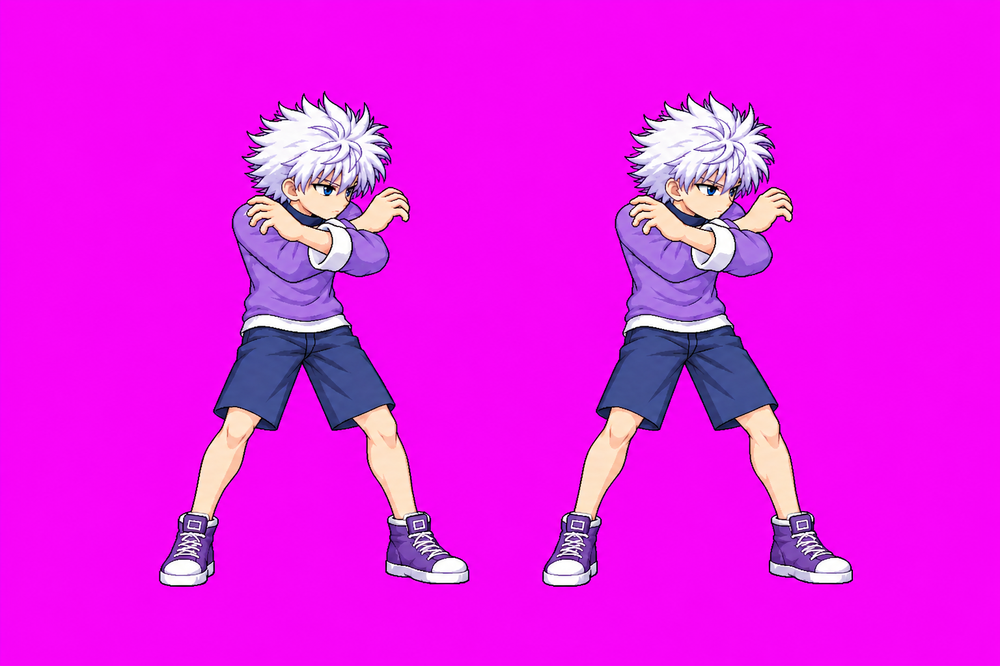
Diagnostic comparison: approved combat | candidate idle10 | earlier hold strip frames
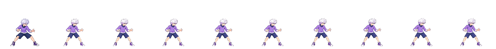
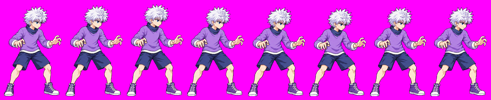
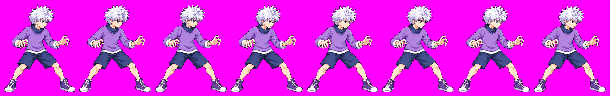
Diagnostic comparison: approved combat | candidate idle10 | earlier hold strip frames
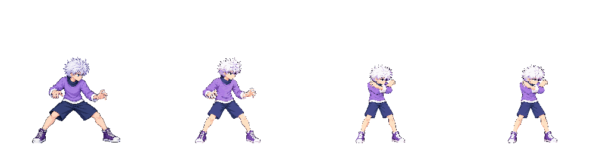
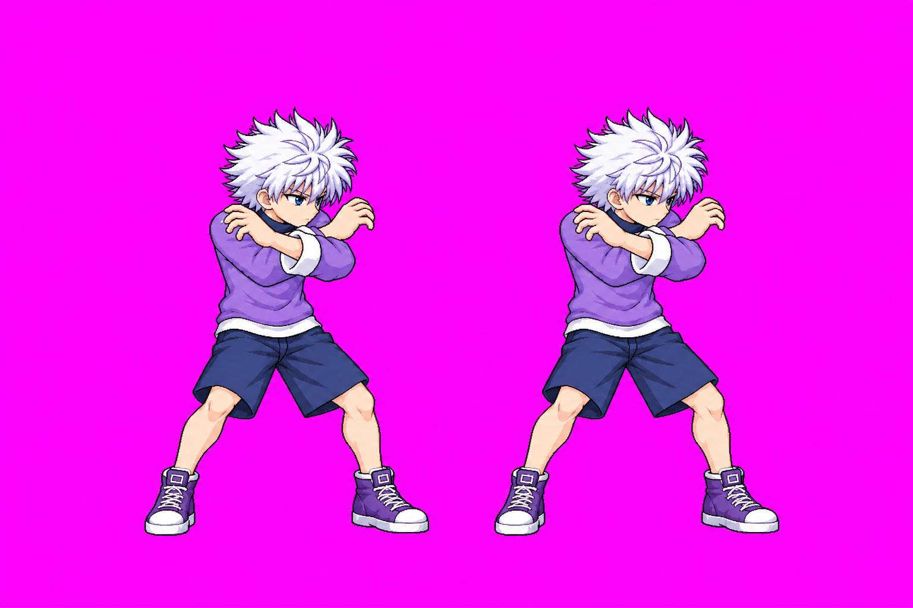
Diagnostic comparison: approved combat | candidate idle10 | earlier hold strip frames
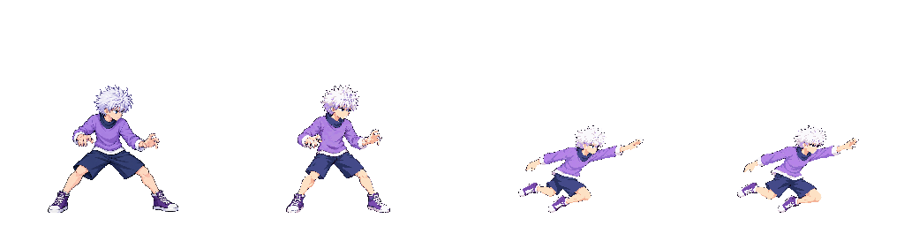
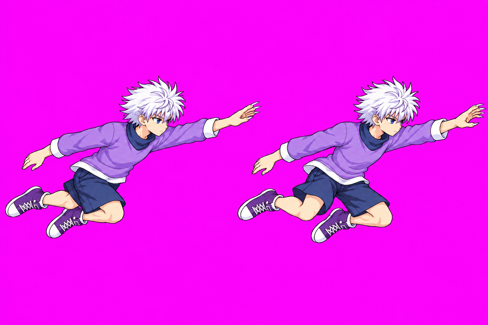
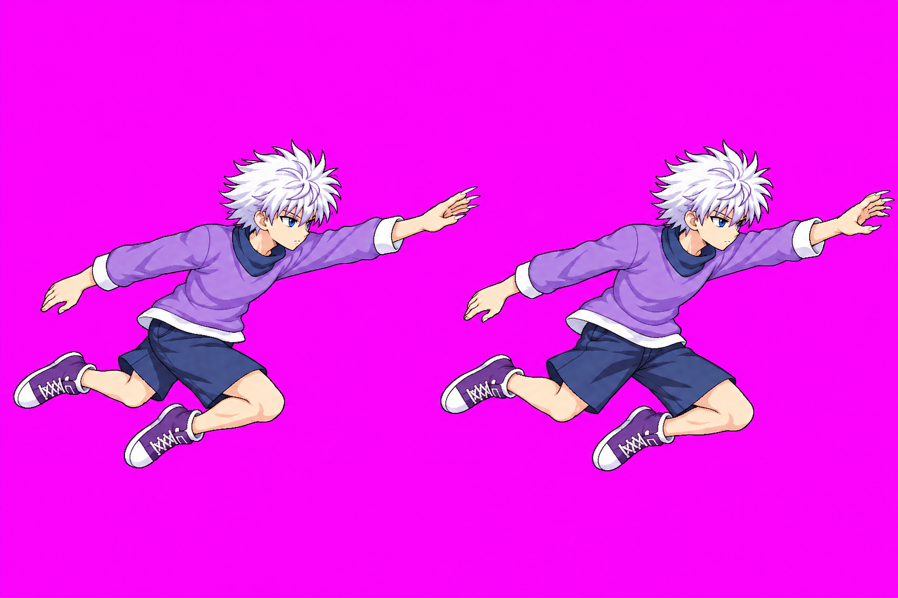
Diagnostic comparison: approved combat | candidate idle10 | earlier hold strip frames
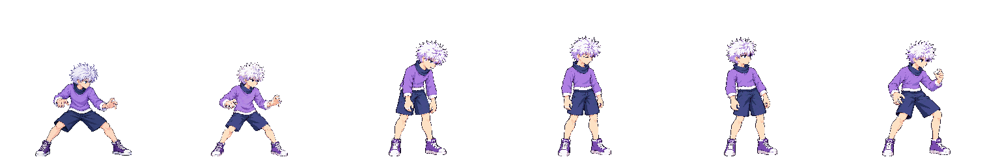
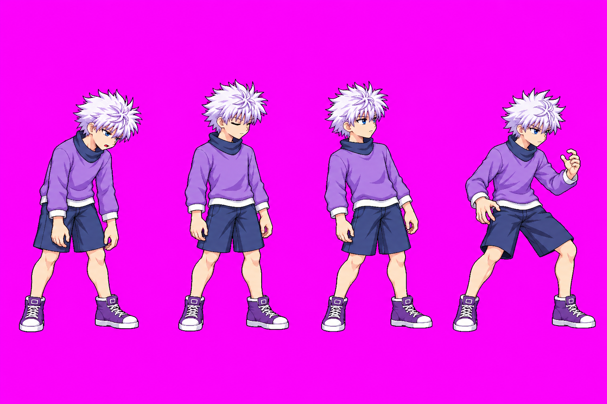
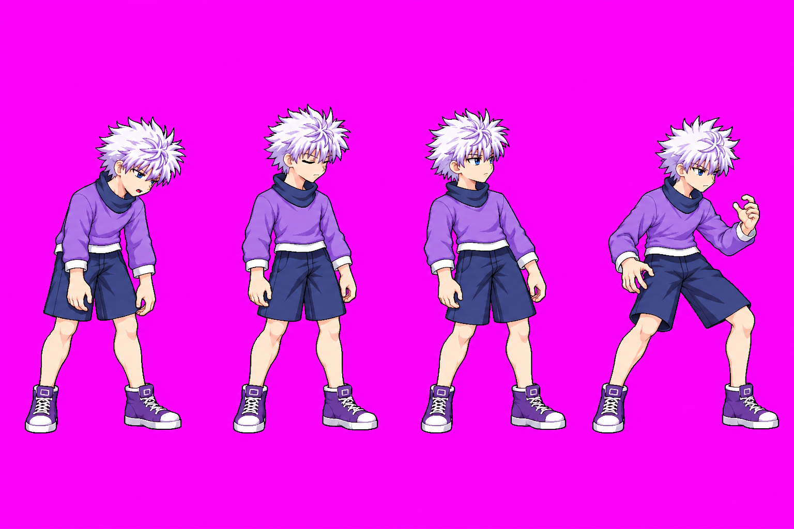
Diagnostic comparison: approved combat | candidate idle10 | earlier hold strip frames
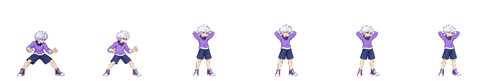
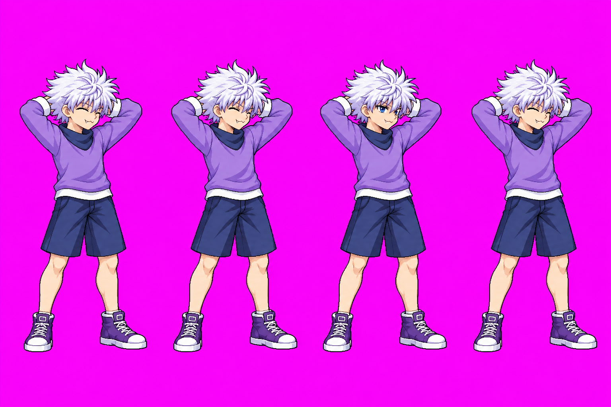
Only stagger and win had evidenced upright torso failures and were redrawn. The five movement/aerial strips are inconclusive under projection/occlusion; no numeric approval is claimed.
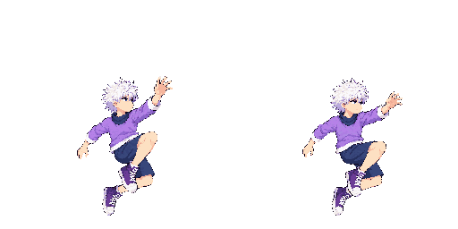
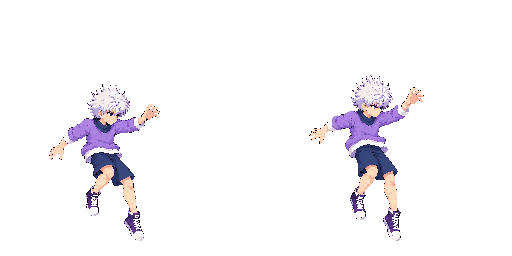
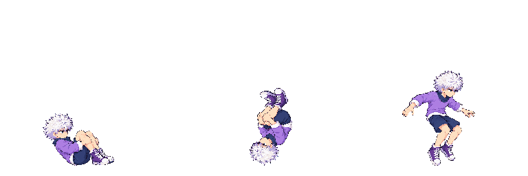
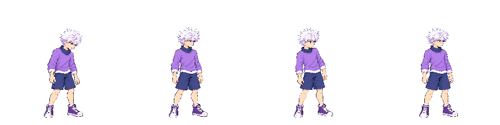
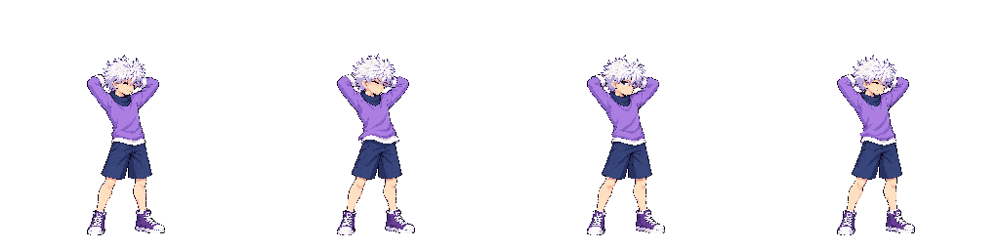
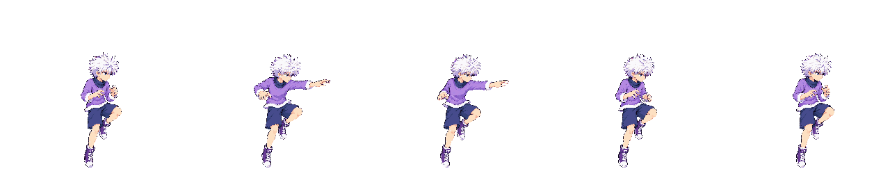
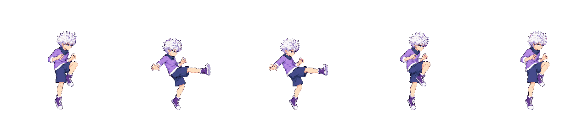
Body-colour area is a noisy triage proxy, never an anatomical-chain pass. Sheets added after TOOL-036 merge.
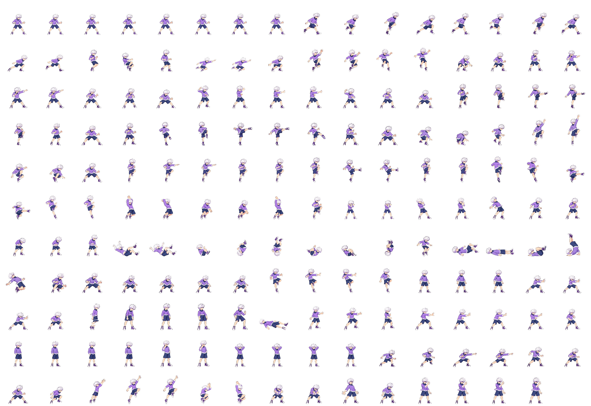